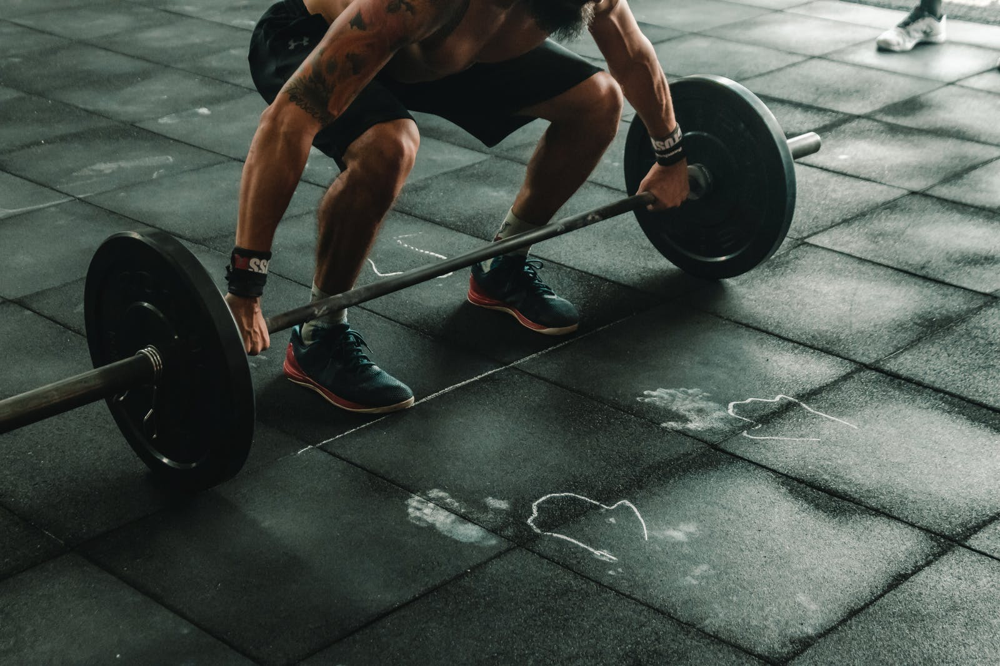

Gymnastiek
Als eerste sport hebben mijn ouders bij op turnen gestuurd omdat ik vroeger als klein kind overal op aan
het klimmen was en ik een heel lenig kind was. Deze sport vond ik heel leuk tot ik op een gegeven moment
nogal veel last kreeg van blessures en dan ben ik met pijn in het hart moeten stoppen met turnen. Een
aantal jaren later heb ik nog geprobeerd om dit terug op te pakken met een vriend maar de blessures
kwamen even snel terug. Na dit een jaar toch geprobeerd te hebben ben ik weer moeten stoppen.


Ijshockey
Nadat ik was gestopt met turnen ben ik gaan zoeken naar wat ik nog heel leuk vond om te doen en dan ben ik uitgekomen bij ijshockey omdat ik vroeger elk weekend ging schaatsen en zonder eigenlijk training of hulp te krijgen ben ik zeer goed beginnen schaatsen op mijn eentje. En dus was ik maar begonnen met ijshockey. Deze sport lag mij wel maar hier ben ik ook weer mee moeten stoppen aangezien de club failliet was en ook omdat ik niet echt geaccepteerd werd in de groep en dat is niet zo fijn als je een sport wilt beoefenen.Fitness
Na ijshockey ben ik even gestopt met sporten en hobbies en heb ik me wat op school gefocust tot dat ik
net voor corona met fitness ben begonnen. Deze sport is iets waar ik echt rekening kan houden met
blessures en daarop kan inspelen en dit is dus ook de sport die ik al bijna 3 jaar doe en er dus ook
nogsteeds mee bezig ben.
